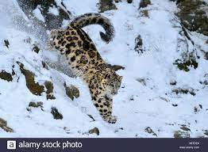
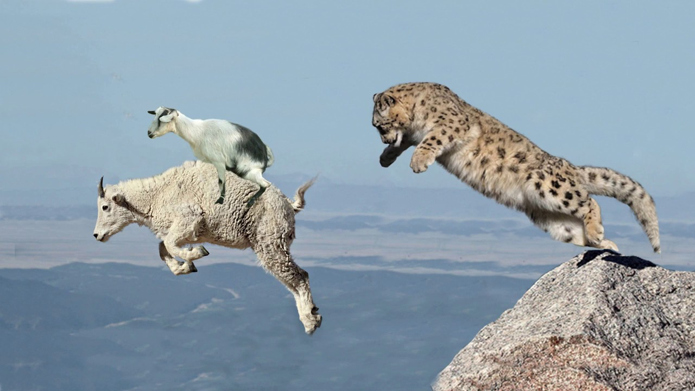

Der Schneeleopard ist eine Raubkatze die in Asien in 11 Länder heimisch ist.Sie ist eine gefährdete Grosskatzenrasse und wird deshalb vom Nabu Naturschutzbund Deuschland unterstützt. Nabu hilft in Kasachstan und sperrt verletzte Tiere in mit Gitter umringte Reviere, wenn sie dann gesund sind lassen sie sie wieder frei. Der Schneeleopard lebt über 3000 Meter in der Alpine.
Die Schneeleoparden besitzen Pinselohren wie ihre Verwanten die Lüchse und sie schaffen einen Hochsprung von 3 meter und ein Weitsprung von 16 meter. Ihren Schwanz ist etwa 1 Meter lang dient als warme Decke im Winter und als Steuerrad beim Sprung. Die Männchen sind bis zu 80 kilo und die Weibchen bis zu 60 kilo. Sie sind ca. 1.50 meter lang und ca. 60 Centimeter hoch. 
Die Grosskatzen jagen Vögel, Huftiere zb.Schafe, Esel, Rehe und Steinböcke.Eichörnchen Hasen Schneehüner, Fische Murmeltiere und Mäuse.
Der Schneeleopard ist Tag und Nachtaktiv. Die Paarungstzeit ist im Januar bis Februar die Weibchen bringen dann nach einer Tragezeit von 98 bis 104 Tage die Jungen zur Welt.
Ordnung: Raubtiere (Carnivora) Unterordnung: Katzenartige (Feliformia) Familie: Katzen (Felidae) Unterfamilie: Großkatzen (Pantherinae) Gattung: Eigentliche Großkatzen (Panthera) Art: Schneeleopard Wissenschaftlicher Name Panthera uncia (Schreber, 1775) Das Fell .Die Grundfarbe des Schneeleopardfells ist ein helles Grau, das im Kontrast zu den schwarzen Flecken fast weiß aussehen kann. Die Variationsbreite der Färbung reicht von blassgrau bis cremefarben oder rauchgrau; die Unterseite ist heller, oft beinahe weiß. Die dunkelbraunen bis schwarzen Flecken auf Rücken, Flanken und Schwanz haben die Form von Ringen oder Rosetten, deren Inneres oft dunkler ist. Nur an Kopf, Hals und Gliedmaßen werden die Rosetten durch Tupfen abgelöst. Das Fell ist zum Schutz vor extremer Kälte sehr dicht und besteht stellenweise aus 4000 Haaren pro Quadratzentimeter. Im Winter erreicht das Fell am Rücken eine Länge von fünf Zentimetern, am Bauch sogar eine Länge von bis zu zwölf Zentimetern. Im Sommer ist es allerdings wesentlich kürzer. Beim Sommerfell tritt die Fellzeichnung deutlicher hervor, die im Winter deutlich verwaschener ist.[2][4]